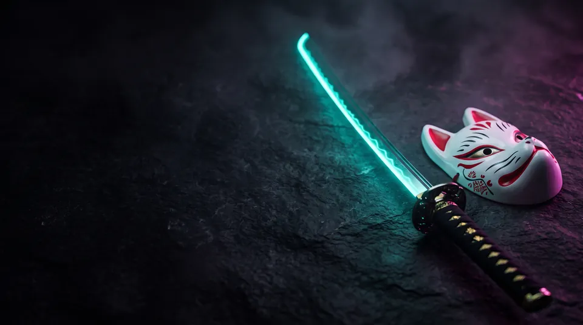
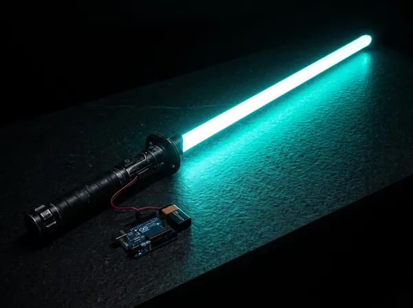
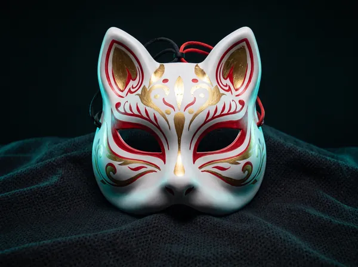
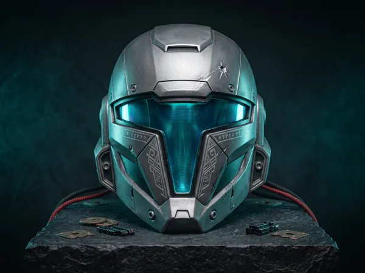
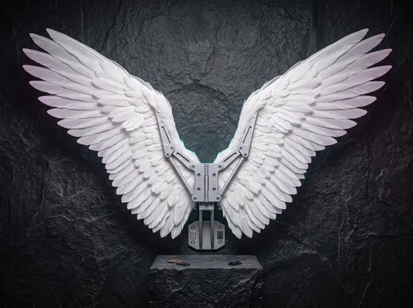
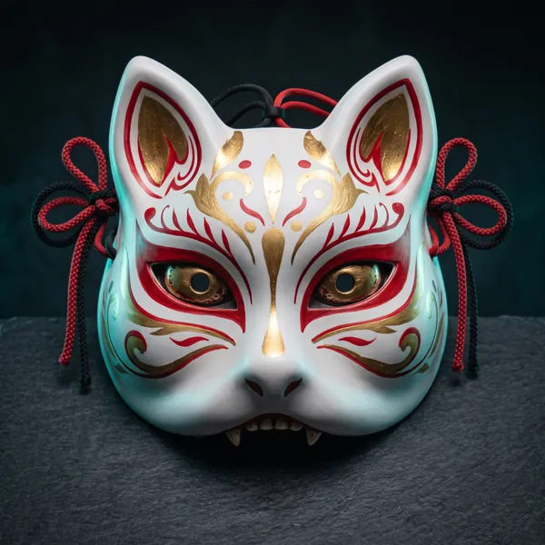
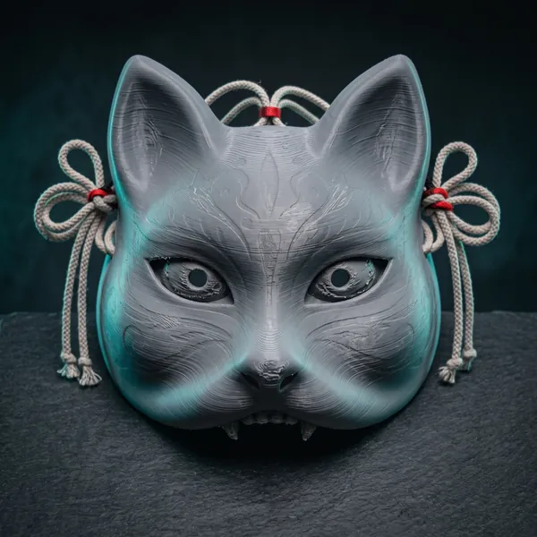

Парные катаны
EVA + стеклопластик · 720 г · 12 дней

Мастерская косплей-бутафории · Тула
Косплей на заказ по вашему арту: катаны, маски, шлемы и доспехи. Прочный каркас, безопасные кромки для фестивалей, покраска аэрографом и доставка в ложементе по всей России.

Катаны, мечи, косы и посохи с армированным сердечником.

Кицунэ, они, шлемы и визоры с вентиляцией и подкладкой.

EVA-пена 70–100 Shore: лёгкая броня на весь день конвента.

LED на Arduino и Seeed Xiao, эффект дыма и звуковые платы.
EVA + стеклопластик · 720 г · 12 дней

3D-печать · 210 г · 6 дней

PETG · 1,1 кг · 18 дней

складной каркас · 1,6 кг · 16 дней
Потяните ползунок: слева — деталь после 3D-печати и шлифовки, справа — после грунта, аэрографии и лака.
Как мы работаем

Разбираем референсы и строим модель под ваш рост и пропорции.
3D-печать деталей или раскрой EVA-пены высокой плотности.
Стеклопластиковый или алюминиевый сердечник, шпаклёвка, шлифовка до гладкости.
Грунт, художественная аэрография, эффект battle damage, защитный лак.
Жёсткий ложемент, коробка и трек-номер СДЭК или Почты России.
Изделия не содержат металлических клинков и острых кромок, сердечник спрятан внутри EVA. К каждому заказу прикладываем «паспорт бутафории» с описанием материалов — его можно показать охране.
По умолчанию делаем реквизит по типовым правилам конвентов: без металла, без выстреливающих деталей, с закруглёнными концами. Если у фестиваля особые требования — пришлите ссылку на регламент.
Катана 100 см из EVA на стеклопластике весит 600–800 г, из 3D-печати — 900–1200 г.
Пришлите арт персонажа — посчитаем стоимость и сроки за 24 часа.
Рассчитать стоимость по арту